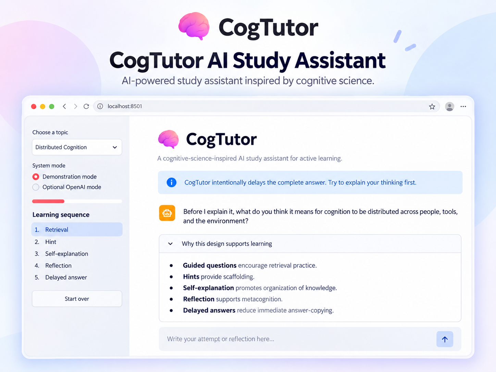
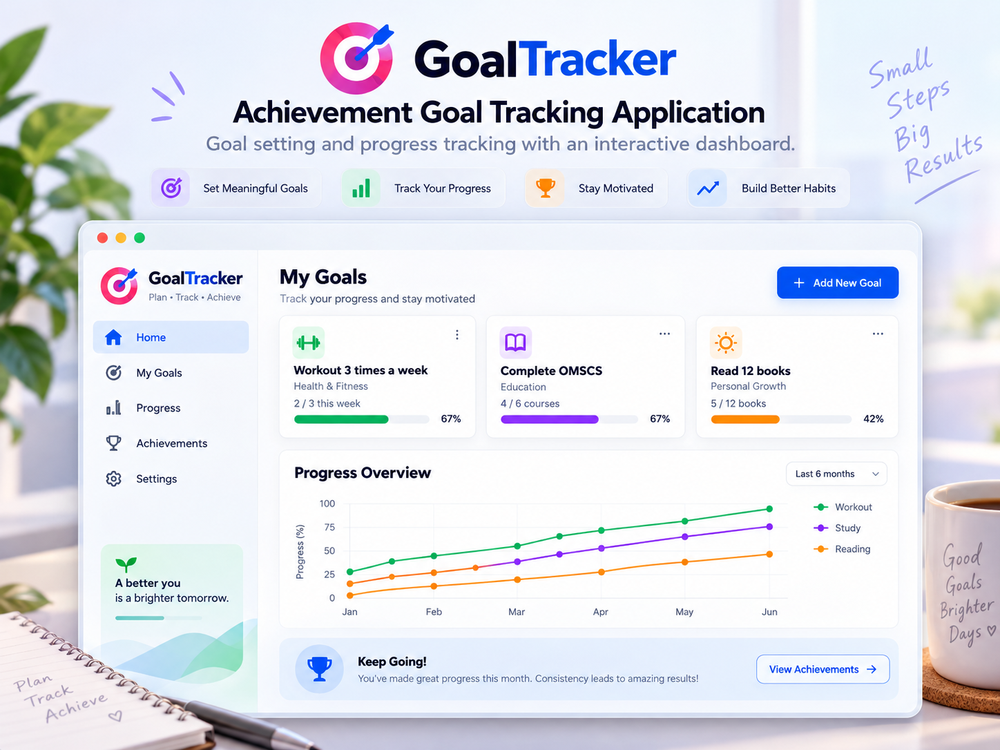
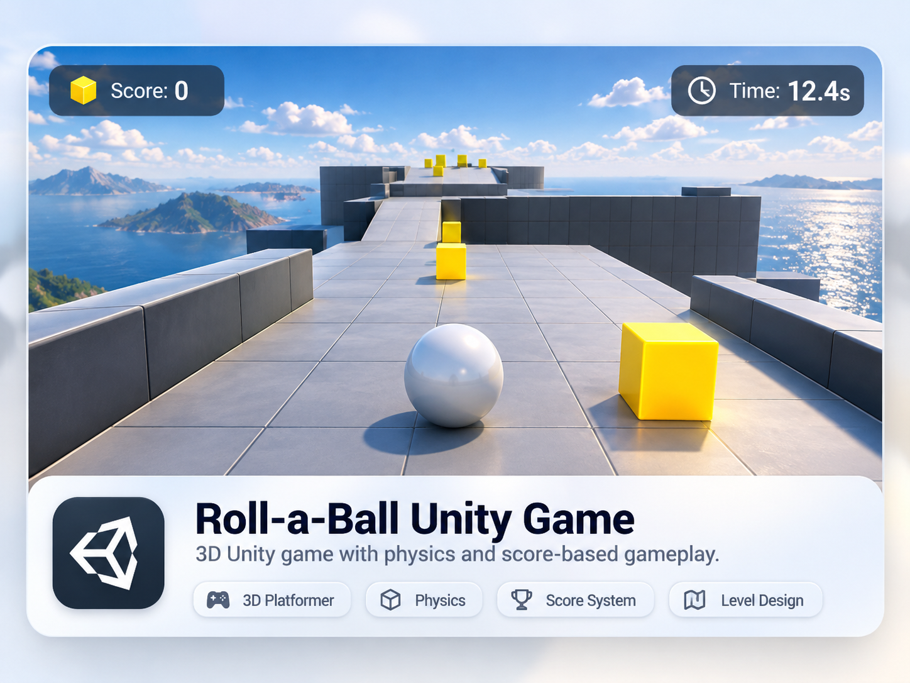

Illustrative project cover · View repository for source code
CogTutor — AI Study Assistant
A Georgia Tech cognitive science project exploring guided questioning and LLM-supported learning.
Explore repository ↗I'm Shabiha Sultana Setu, a computer science graduate student with interests in AI applications, healthcare analytics, human-computer interaction, and software development.
I have completed the coursework for my M.S. in Computer Science at Georgia Tech, with degree conferral expected in December 2026. My academic work spans LLM-powered learning experiences, healthcare data applications, requirements engineering, and usability-centered design. I enjoy connecting technical problem-solving with real user needs.
Four public repositories showcasing my work across artificial intelligence, data analytics, user experience, and game development.

Illustrative project cover · View repository for source code
A Georgia Tech cognitive science project exploring guided questioning and LLM-supported learning.
Explore repository ↗
Illustrative project cover · View repository for source code
A healthcare analytics application for processing FHIR data and identifying gaps in patient care.
Explore repository ↗
Illustrative project cover · View repository for source code
An AI-assisted application for personal goal tracking, designed with a user-centered approach.
Explore repository ↗
Illustrative project cover · View repository for source code
A Unity game where players collect rotating objects and track their score.
Explore repository ↗Worked in international airline operations from March 2015 to August 2021, supporting safety, customer experience, cross-functional coordination, and operational problem-solving. Took on supervisory responsibilities for six months, helping coordinate team activities and resolve service issues.
Download my resume for a closer look at my technical skills, education, projects, and experience.
Interested in collaborating or discussing opportunities? I'd be glad to connect.